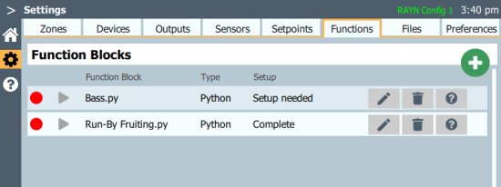
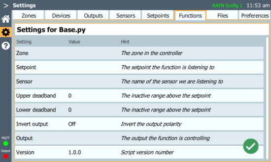
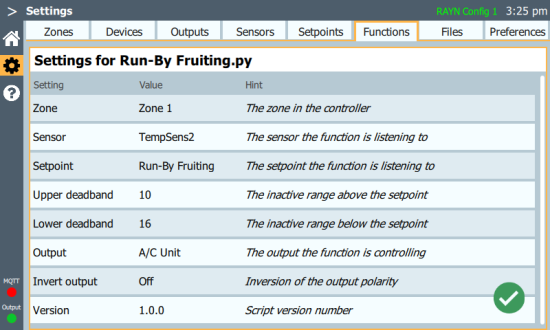

Settings > Functions
Functions are Python scripts that can automatically monitor and control properties and devices in your space.
RAYN Syrcadia on PC users will be notified Python is required for functions to work if not already installed.
- Select the Install button in the top right.
- Choose the Customize installation option.
- Leave all Optional Features selected and continue with the Next button.
- Under Advanced Options, select "Add Python to environment variables."
- Use the Install button to proceed with installation.
- Once complete, restart the Syrcadia software for the changes to take effect.
Using Functions
Functions are configured to monitor a property via a connected sensor from Settings > Sensors, as well as setpoints activated from a day plan (see Settings > Setpoints). When the value for this property goes above or below preset limits, the function can automatically activate or deactivate other devices from Settings > Devices. For example, in a space with a temperature sensor where the temperature has risen too high, a function could activate an air conditioner until the sensor detects that the temperature is within an acceptable range again.
Functions require a setpoint in Settings > Setpoints and a day plan that sets the setpoint value in Setup > Day Plan.
Creating and Editing Functions

Available function blocks are listed on the Functions tab. Use the question mark button to display additional information about the function and its properties. Delete function blocks with their trashcan button.
To add a new function, select the green + button in the upper right corner of the editor. Two default functions are included, along with a template for creating functions of your own. You will be prompted to save your new function before proceeding.

Once a function is added, it will indicate additional setup is needed. Select a function's pencil button to edit the settings for the script.

2-Point Regulator
The 2-point regulator function will automatically activate or deactivate a single device when a measured property goes a specified amount above or below the setpoint value.
The following script settings are available:
- Zone - the RAYN zone the function will affect. A zone must be selected in order to enter additional settings.
- Sensor - the sensor being used to measure a property; temperature, for example. For the script to run, the sensor must have a name assigned via Settings > Sensors in the Text column.
- Setpoint - the desired level of the property being monitored. This is set when a setpoint is activated in a day plan.
- Upper deadband - the amount the measured property can rise above the setpoint before the output device is set to its maximum level. For example, with a setpoint of 20° and a desired limit of 30°, the upper deadband would be 10.
- Lower deadband - the amount the measured property can fall below the setpoint before the output device is set to its minimum level. For example, with a setpoint of 20° and a desired limit of 4°, the lower deadband would be 16.
- Output - the device that will be set to its minimum or maximum level when the function activates. Behavior is determined by device type; fixtures go to full or zero, relays turn on or off, and so on.
- Invert output - reverses the polarity of the signal being sent to the output, allowing you to turn a device off instead of on, or a fixture to full instead of zero.
- Version - the version number of the script.
3-Point Regulator
The 3-point regulator function will automatically activate or deactivate two separate devices, one triggered by an upper limit and the other by a lower limit.
The following script settings are available:
- Zone - the RAYN zone the function will affect. A zone must be selected in order to enter additional settings.
- Sensor - the sensor being used to measure a property; temperature, for example. For the script to run, the sensor must have a name assigned via Settings > Sensors in the Text column.
- Setpoint - the desired level of the property being monitored. This is set when a setpoint is activated in a day plan.
- Default Setpoint - the setpoint value used until a different value is set via a day plan.
- Upper deadband - the amount the measured property can rise above the setpoint before the Higher Than Output is activated or deactivated. For example, with a setpoint of 20° and a desired limit of 30°, the upper deadband would be 10.
- Higher Than Output - the device that will be activated or deactivated once the measured property is higher than the setpoint value plus the upper deadband value.
- Lower deadband - the amount the measured property can fall below the setpoint before the Lower Than Output is activated or deactivated. For example, with a setpoint of 20° and a desired limit of 4°, the lower deadband would be 16.
- Lower Than Output - the device that will be activated or deactivated once the measured property is lower than the setpoint value minus the lower deadband value.
- Version - the version number of the script.
Base Template and Custom Functions
The included base template file is modeled after the 2-point regulator script, and can be edited to create a custom function. Custom functions can also be edited on a Windows® or macOS® compatible computer using any Python-compatible script-editing software.
WARNING: RAYN Syrcadia v2.2.0 and later software contains scripting language that could allow end-users to program customized language to interact with and/or control third party products and devices. You, as the end-user, assume all risks associated with, related to, or arising out of your use of or access to such features. You agree to indemnify and hold harmless Electronic Theatre Controls, Inc. (ETC), Electronic Theatre Controls, Inc. d/b/a RAYN Growing Systems (RAYN), their respective officers, directors, employees and agents from and against any and all claims, liabilities, damages, losses or expenses, including attorneys’ fees and costs, relating to or arising out of your use of or access to such scripting language feature in the Syrcadia software.